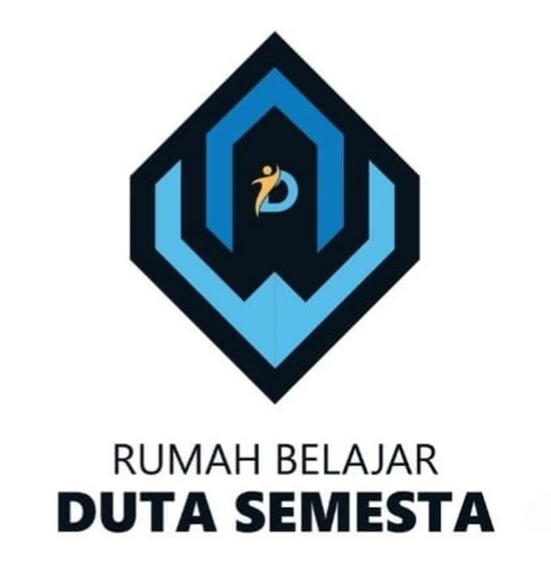

Pengalaman

HIMSI DPC CUTMUTIA X KALIMALANG
Sekretaris
1. Membuat proposal, serta menyusun laporan, dan dokumen operasional lainnya.
2. Mencatat hasil rapat (notulensi), dan mendistribusikannya.
3. Mengumpulkan dokumentasi kegiatan dan laporan kerja untuk keperluan evaluasi.
HIMSI DPC CUTMUTIA X KALIMALANG
Wakil Ketua
1. Membantu ketua dalam menjalankan roda organisasi, merumuskan kebijakan, dan membuat keputusan.
2. Mengambil alih tugas dan tanggung jawab ketua ketika berhalangan hadir dalam kegiatan.
3. Menjalin komunikasi dengan internal atau eksternal kampus untuk perizinan kegiatan organisasi.

Rumah Belajar Duta Semesta
Koordinator Divisi Creative
1. Mengelola sosial media duta semesta
2. Mendokumentasikan kegiatan (foto/video) dan merancang desain untuk publikasi.
3. Memimpin anggota divisi dalam pembuatan desain.

Auto Window
Admin Online Shop
1. Merespons pertanyaan pelanggan seputar produk serta Menangani Komplain dan Retur.
2. Memantau stok, melakukan packing (jika diperlukan), hingga mencetak label pengiriman
3. Memantau peforma toko serta mengatur promosi penjualan .
4. Mengunggah, memperbarui, atau menghapus foto, deskripsi, dan stok produk di marketplace agar selalu update.